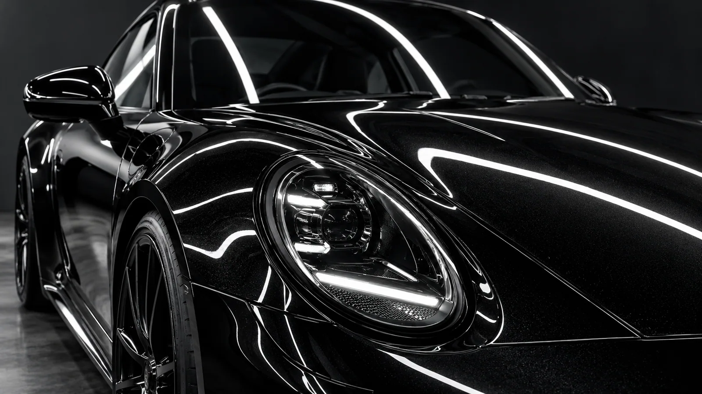
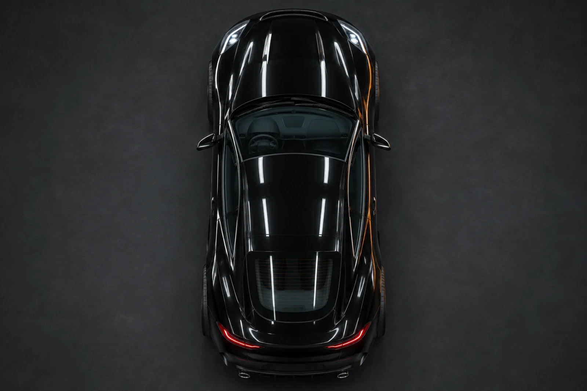

ДОПОСЛЕ
01 / Бордовый гран-туризмо
Полировка кузова
Паутинка на лаке → чёткое отражение.
Глубокие повреждения могут остаться: результат зависит от состояния и запаса лака.
Как это работает ↗
01 / ЧЕТЫРЕ ПРЕОБРАЖЕНИЯСравнить до и после ↓01 / РАЗНИЦА В ДЕТАЛЯХ
Лак, кожа, оптика, диски. Перемещайте границу на каждом снимке — у каждой поверхности своя история преображения.
01 / Бордовый гран-туризмо
Паутинка на лаке → чёткое отражение.
Глубокие повреждения могут остаться: результат зависит от состояния и запаса лака.
Как это работает ↗02 / Светлый салон внедорожника
Засаленный блеск → мягкая матовая фактура.
Потёртости красочного слоя и трещины требуют отдельной реставрации.
Как это работает ↗03 / Серебристый городской хетчбэк
Мутный пластик → прозрачная поверхность.
Наружная обработка. Внутреннее запотевание и неисправности оптики требуют ремонта.
Как это работает ↗04 / Синий спортивный универсал
Тормозная пыль → выразительные спицы.
Удаление отложений не исправляет коррозию и повреждения от бордюра.
Как это работает ↗Созданные для концепта визуализации, не фотографии реальных заказов. Возможный результат определяют после осмотра автомобиля.
ТЯНИТЕ ГРАНИЦУ ↔02 / НАЙДИТЕ СВОЮ ЗАДАЧУ
Не обязательно разбираться в составах. Начните с того, что замечаете каждый день.
О различиях покрытий и защитной плёнки: Gtechniq ↗ · XPEL ↗
03 / ПОДХОД NORD
В основе концепции NORD — внимательная работа с конкретным автомобилем. Сохранять покрытие, учитывать материалы и показывать, что изменилось.
Собрать свой сценарий ↗Уточняем историю покрытий, осматриваем лак и материалы салона. Определяем, где нужна обработка, а где достаточно аккуратной очистки.
Подбираем способ под поверхность. Пробный участок помогает увидеть результат до обработки всего элемента.
Что получится улучшить, что останется и сколько времени потребуется. Состав работ и стоимость обсуждаются до старта.
Показываем результат под контрольным светом и объясняем, как мыть автомобиль и ухаживать за выбранным покрытием.
04 / ВАША КАРТА УХОДА
Выбранные услуги уже здесь. Уточните зоны и привычки — получите короткий план для разговора с мастером.
01 / ВЫБОР ЗОН
ВАШИ ПРИОРИТЕТЫВыберите зоны на изображении.
Каждое нажатие добавляет или убирает направление ухода.

ВИД СВЕРХУ / ВЫБЕРИТЕ ЗОНЫУдаление загрязнений, осмотр покрытия и подбор обработки под его состояние.
Можно выбрать несколько зон. Стоимость не рассчитывается: это демонстрационная модель сервиса.
Три ответа помогут уточнить план.
В реальном сервисе его подтверждают после осмотра.
Сохраните карту как отправную точку
для разговора с мастером.
Глубокие царапины, сколы и повреждения обивки не обещаем устранить уходом. После обработки уточните срок до первой мойки и ограничения выбранного состава.